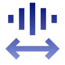

Doppler Effect

Exploring How the Movement of a Sound or Light Source Affects the Frequency and Pitch We Perceive


Exploring How the Movement of a Sound or Light Source Affects the Frequency and Pitch We Perceive
The Doppler Effect is the apparent change in frequency or pitch of a sound due to the relative motion between the sound source and the observer.
When
Source Approaches,
Frequency increases
( Higher Pitch )
When
Source Moves Away,
Frequency decreases
( Lower Pitch )


Press Start to begin. Use the arrows to simulate how the observed frequency changes when the source or observer moves toward or away.
For the best experience, please use headphones.
The Doppler Effect shows how motion changes the frequency of waves—higher when approaching and lower when moving away.